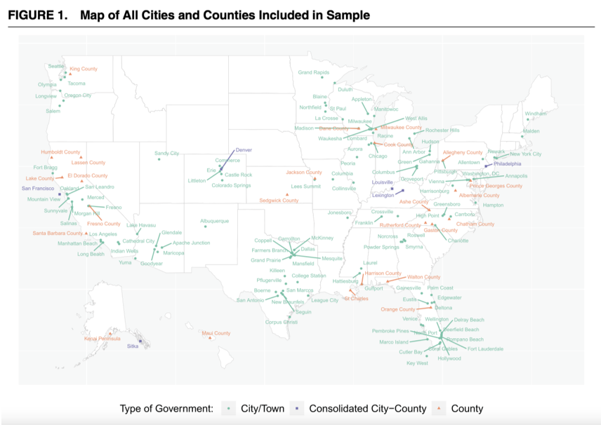
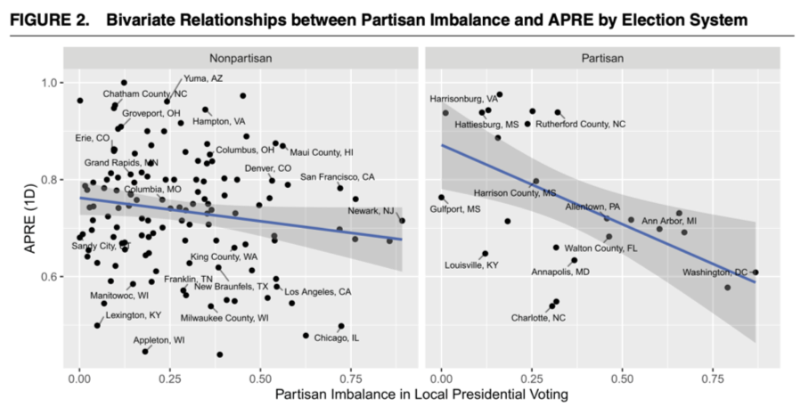
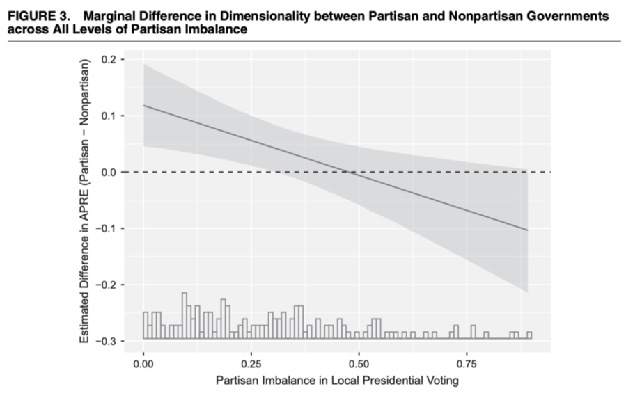
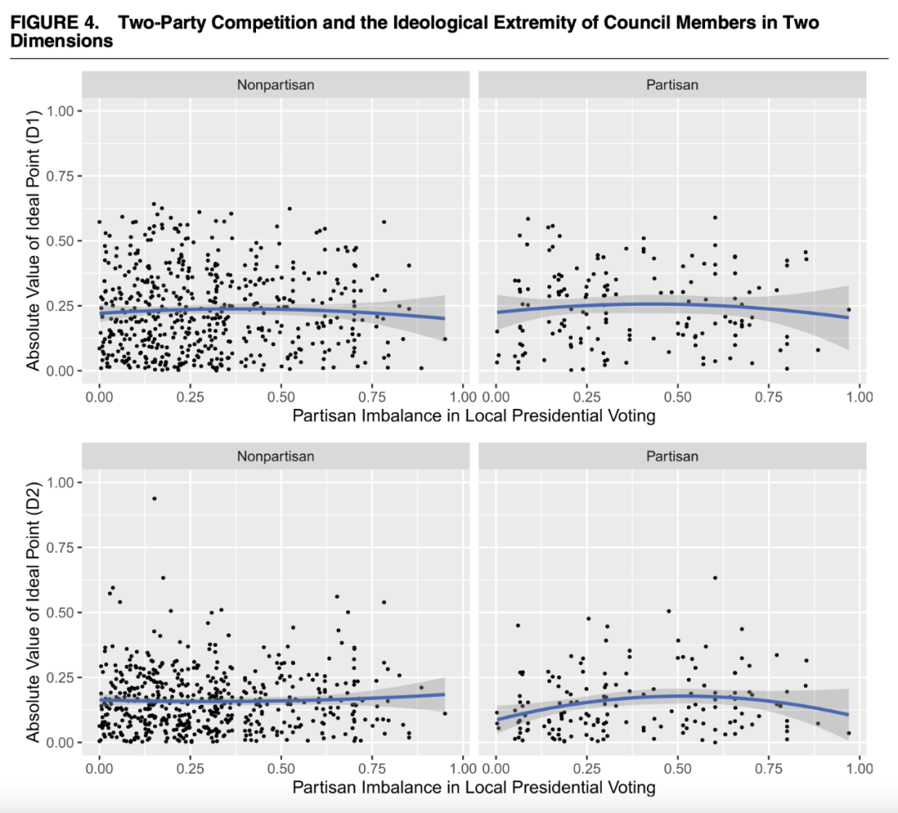
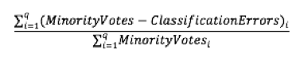

收录于合集 #比较政治学 121个
文献来源： Bucchianeri, Peter (2020). Party Competition and Coalitional Stability: Evidence from American Local Government. American Political Science Review , 114(4), 1055–1070. https://doi.org/10.1017/s0003055420000386
中文摘要： 几十年以来，政治学者们一直认为，党派竞争是成熟的政党体系所必备的基本组成部分。本文主要研究了美国的地方政府来自151个市议会的原始唱名记录。作者发现，当选举人按照党派划分且选民在两党之间较均匀分布时，立法行为就更多地是一维的（one dimensional）[1]，政治联盟较为稳定。当上述两种特征中的任何一个都不存在时，政治精英的行为就是非结构化且难以预测的，政治联盟会随着时间和问题的变化而变化。这表明，党派选举和政党组织对于将选民的不安全感转化为有组织的政府至关重要。
作者简介： Peter Bucchianeri，美国高效立法研究中心（Center for Effective Lawmaking）研究顾问。
目前政治学中的传统理论认为，党派竞争可以为选民提供话语权，让不服务于选民的议员们受到应有的监督和问责。在本文中，作者通过考察选举中的政党竞争激烈程度与组成政府的联盟的稳定性之间的关系，来考察政党竞争与高度组织化、负责任的民主政府的关系。地方议会是政党和政党竞争研究的理想对象，因为政治精英在地方性议题上的偏好在近年来愈加根据党派而分化 (de Benedictis-Kessner and Warshaw 2016; Einstein and Glick 2016)。此外，美国国内的很多市、县级选举在制度上并不区分党派，从而允许作者将不同的市、县按是否区分党派来进行横向比较。
作者发现，如果政党联盟的稳定性需要依靠党派间的选举竞争，那么在两党选民大致均衡的情况下，政党联盟的立法行为会趋于一维。相比之下，没有任何证据表明，在无党派选举产生的议会中，选民的党派对立和议会政党联盟的立法投票行为之间存在任何关系。这种跨地区和立法环境的差异表明，分党派选举对于构建精英竞争至关重要，以至于分党派选举的缺失会阻碍政治精英的长期稳定合作[2]。
党派政府和非党派政府中的党派竞争
选举竞争会在公职人员竞选、议事和再选的过程中给他们造成不安全感。这种不安全感反过来会强化公职人员之间相互合作的动机，导致他们在立法机构内更有凝聚力，投票更加集中，更容易让选民问责。最终，这意味着选民们可以更好地被代表 (Aldrich 1995; Key 1949; Schlesinger 1985)。这种理论与关于美国南部在内战后一党统治的大量学术研究相一致。其中大部分研究表明，如果没有可靠的来自党外的竞争，南方各州的政治就会陷入混乱的派系纷争。随着精英联盟在各种问题上的转变，政策制定的结果在很大程度上倾向于富人而非穷人 (Aldrich and Griffin 2018; Key 1949; LeBlanc 1969; Patterson 1962)。哪怕是在其他非南方州，学者们也注意到，无论是在国会还是在各州的跨部门选举中，议员们根据党派投票的程度随着选举竞争的激烈性而变化 (Carroll and Eichorst 2013; Schlesinger 1985)。
所有现存的证明政党竞争和联盟稳定之间有关系的研究都仅分析了党派制度政府。然而，尽管在州和国家层面几乎普遍使用党派选举系统，大约70%的美国地方政府使用无党派选举系统。这意味着选举过程中不存在党内初选，候选人的党派归属也没有被列在选票上。在实践中，无党派选举会削弱或消除政党组织在选举和政府中的作用。在大多数无党派选举中，宣称自己是某个主要政党的候选人并不会对选举结果造成什么可见影响，且大多数候选人都不是政党活动的积极参与者 (Adrian 1959)。
这些结构性差异不禁让人发问：随着美国市、县的地方政治议题愈发受到全国性议题的影响，以往研究中记录的与竞争相关的趋势是否也适用于今天的无党派地方选举中？尽管政党组织可能不是地方政府选举和管理系统的正式组成部分，随着地方政治日益意识形态化，仅仅是地处一个摇摆州 (Battleground State)，可能就足以使党派之争成为地方无党派选举的一个显著特征。作者认为，我们是否能在党派政府和非党派政府中看到相似的立法行为，很可能取决于竞争和联盟稳定性所依靠的背后机制。如果稳定的政治联盟需要强大且活跃的政党组织，那么无论选举的客观激烈程度如何，我们都应该在党派政府中看到比非党派政府显著更高的政治联盟稳定性；相反，如果稳定的政治联盟来源于个别立法者的自身偏好，那么我们就应该在两种政府中看到类似水平的联盟稳定性。
党派选举竞争与政党组织
选举竞争促进政治联盟稳定的第一个机制是选举竞争与政党组织相互作用的方式。当选举竞争意味着对多数党地位的实质性威胁或是少数党通过选举谋得职位的机会时，政党组织就有更大的动机去投入和利用其手中的政治资本，来改善其成员的当选机会 (Harmel and Hamm 1986; Schlesinger 1985)。
对于政党来说，对这些政治资本的使用和其效力会因选举失败的可能性而有所不同。例如，Harmel和Hamm(1986)就曾研究过德克萨斯州州内选举引入党派竞争后[3]，立法机构内每个政党是如何强化它们的组织能力以增加他们赢得多数席位可能性的。
对于候选人来说，竞争的激烈程度同样会改变他们寻求党派帮助的积极性。考虑到政党存在的主要目的之一即为连任和维持多数席位，那么如果缺乏强有力的选举竞争，政党对候选人选举前景的重要性就会降低。政党资源能够给候选人带来的曝光度和当选后被许诺的职位固然诱人，但是对于候选人来说，时刻与政党的路线保持一致是有成本的。当选民们压倒性地支持某一方时，政党能够为候选人在选举中带来的帮助就很有限了。
党派选举竞争与政治精英行为
上一段的逻辑是，当选民偏好大致呈均匀分布且党派竞争激烈，那么政党组织将会应运而生，利用选举和立法工具增加其候选人的胜选概率。这些增加胜选概率的尝试反过来又增强了党内的凝聚力，从而使政治联盟在冲突中更加稳定。虽然这个逻辑是自洽的，但是政治联盟稳定性同样有可能取决于党派竞争是如何影响当权者的行为的。
上述这个精英行为机制的成立取决于两点。首先，随着美国的地方性政治议题日益变得意识形态化 (Hopkins 2018)，无论当地有没有一套成熟的政党体系或是否使用分党派选举，其地方立法机构都有可能被一群高度意识形态化的议员所占据。其中，那些自认为意识形态立场较为一致的议员和候选人们，也就自然而然地形成稳定的政治联盟。在这种情况下，稳定联盟的形成就不是党派政治行动的产物，而是政治精英的个人选择。其次，即便在一个无党派选举环境下，特定政治派系不做出任何有利于候选人选举的政治行动，候选人也有主动与其挂钩的动机，因为那样可以更轻松有效地向选民表达自己的政治立场。
在实际测量中，如果政治精英的个人偏好导致了不同立法联盟稳定性的差异，那么通过比较使用分党派选举制度和无党派选举制度的地方政府，我们就可以验证这一点。具体来说，如果不论地方政府使用分党派选举制度还是无党派选举制度[4]，议员的立法行为都会随着选举竞争的激烈程度降低而变得更加多维（意味着政治联盟变得不稳定），那么政治联盟的稳定性就是取决于精英的个人偏好的。相反，如果使用分党派选举制度的政府中政治联盟的稳定性显著更高，那么选举制度特征就是更主要的决定性因素。
数据分析

图一
图一描述了样本中按政府类型分类的市和县的完整地理分布。
作者收集的资料包括151个市、县级政府[5]近35万张记录在案的唱名投票和约100万项立法会议记录。几乎所有这些数据都是直接从政府官方网站上提取的，地方议会的书记员们用这些网站来公开管理其立法记录。因此，对于样本中的每一个地方政府，作者都有自该政府的线上系统启动以来提出的每一项法案的信息，比如提案的发起人是谁，该法案在委员会中如何运行，最终结果是什么，以及如果它得以被投票表决，那么每个成员是如何投票的。这种程度的地方政府数据收集对于研究地方政治来说是前所未有的。
从地图上可以看出，该样本覆盖了美国32个州和哥伦比亚特区中每个州/地区的至少一个地方政府。平均来讲，每个州中被选作样本的地方政府数量与该州的人口相关，但是也有诸如芝加哥这样的特例。
立法维度和党派竞争的测量
对于一个地方政府来说，如果所有的立法冲突都以党派为明显分界，或是围绕单一的问题来展开，那么立法机构就是趋向于一维的；但是，立法冲突不以党派为分界，冲突从一个问题转移到另一个问题，那就需要从多个方面来解释此类投票模式。
为了测量立法维度，作者先使用收集到的2012年1月至2017年4月的所有数据，分别为每个市/县的委员会拟合一个一维空间模型，然后使用非参数最优分类方法(non- parametric optimal classification method) (Poole 2000)来确定尺度。接下来，为了评估这个一维空间模型的拟合性，作者使用了误差总比例减少(aggregate proportional reduction in error; APRE)统计量[6]。这个统计量衡量了n维空间模型在对投票选择进行分类时的有效性，相对于所有立法者投票占多数的基准模型。如果一个一维模型（以0到1的尺度测量）的APRE对于某个特定城市的立法机构来说是相对较高的，那么这个城市的立法机构就是一个更稳定的一维投票空间。反之，当APRE较低时，则说明立法环境较为不稳定。这样一来，立法维度就成为了一个相对客观的概念。这是很重要的，因为对立法维度的评估常常严重依赖于研究者的主观判断(Aldrich, Montgomery, & Sparks, 2014)，并且可能得出关于某个模型的效力的误导性结论。
同时，作者将党派竞争操作化(operationalize)为地方总统选举中的党派不平衡。具体来说，作者选取了2008年每个地方政府的总统选举差额的绝对值。如果值为0则表示该地区在奥巴马和麦凯恩之间的选举结果完全相同，值为1则表示完全偏向其中的某一方。这样做的一个潜在问题可能是，总统的选票份额与地方职位的正当竞争模式没有足够的对应关系。然而，最近的选票证据表明，选民选择同一政党的候选人担任最高（即总统）和最低（地方政府）职位的概率普遍较高，特别是在我们这个两极分化的时代(Kuriwaki 2019)。
在图二中，作者首先呈现了党派平衡程度和立法维度的二维关系，其中所有使用党派选举的地方政府被列在右侧，使用无党派选举的地方政府被列在左侧。横坐标是党派竞争的平衡程度（数值越高，一党统治程度越高，党派竞争越不激烈），纵坐标是立法环境稳定性（数值越低越不稳定，维度越高，党内派系越多）因为政党组织在使用党派选举的市和县更有可能存在，我们应该在右图看到随着党派竞争的不平衡，立法维度相应降低，而不应在左图看到这样的趋势。图中可见，这也正是我们能够观察到的模式。在右图中，当党派竞争激烈，政党势力较为平衡时，立法环境的稳定性相对较高，立法维度较低，意味着议员们大多以党派为分界线进行投票，政治联盟稳定。当随着党派竞争减小，政党势力越来越不平衡，立法环境的稳定性就降低了，意味着党内开始出现派系纷争，议员们开始在党派之外寻求联盟。但是在左图中，我们无法看到立法环境稳定性和党派平衡程度的关系。

图二
然而，当一个政府的地方选举是分党派的，且选民压倒性地支持一个政党时，这种分党派选举带来的更高的政治联盟稳定性就消失了。从图三中我们可以看到，随着党派竞争的越来越不平衡（横坐标向正方向），党派政府和无党派政府的APRE差值（即立法环境稳定性差值，Partisan
Nonpartisan）在党派竞争平衡性为0.50左右时为0，即两种政府中立法环境稳定性相似。随着党派竞争更加不平衡，党派政府中的立法联盟稳定性开始弱于无党派政府的立法联盟稳定性。

图三
立法维度和政治精英行为的测量
为了验证作者的第二个假设，即政治联盟的稳定性取决于精英的个人偏好，作者使用了基于调查的意识形态估测（Bucchianeri 2017）。这些估测涵盖了463个市/县议会中的720名地方官员，通过访谈12个地方政策问题而得出的（Poole 1998）。这些问题涵盖了诸如住房、公共服务和经济增长等问题，遵循了Einstein & Glick (2016)的观点，以政策权衡为提问框架，便于这些官员们理解。估测的结果显示，对一名议员的意识形态进行定量需要考虑两个维度：党派忠诚程度和对以市场为基础的公共政策解决方案的偏好。
在图四中，左上图和右上图衡量了议员们的党派忠诚程度与党派竞争平衡度的关系，左下图和右下图衡量了议员们的市场政策偏好与党派竞争平衡度的关系。左图均为无党派政府环境下，右图均为党派政府环境下。横坐标依旧表示党派竞争的激烈程度，纵坐标则表示议员的意识形态极端性，正方向为更加极端。
如果政治联盟的稳定性取决于政治精英的个人意识形态偏好，那么我们应该在更激烈的党派竞争环境下看到更多意识形态较为极端的议员，因为他们的个人偏好决定了政治联盟的竞争方针。但是，无论在任何一个图中，我们都看不到这样的正相关。这说明议员的自身意识形态偏好并不能可见地影响党派竞争的方向。

图四
总结
作者在这篇论文中指出，选民中的党派竞争和体制上的党派政府是一个稳定、低维度立法体系的关键组成部分。实证分析显示，对于使用党派选举的政府来说，随着一个政党在选举中日益占主导地位，政治精英的投票行为就开始变得不那么单一了。这意味着每个议会的政治联盟更有可能因为议题的转变而转变。重要的是，这种关系在非党派政府中并不存在，而且作者也没有发现任何证据表明，在非党派或非竞争环境中当选的官员在意识形态上没有他们有竞争的、无党派的同行那么极端。鉴于政党组织更有可能在使用党派选举的政府中存在，这些不同背景下的差异表明，党派竞争通过政党组织而非个人行为影响政治联盟。
作者研究结果表明，美国的许多政府部门没有达到促进党派问责的必要标准。事实上，考虑到这一级别的大多数政府要么缺乏实质性的两党竞争，要么使用无党派选举系统，实际上很少有城市向选民提供候选人当选后立法行为的足够可靠的指标。这种党派线索的匮乏反过来又有可能阻碍问责过程，从而阻碍代议效能。
译者注
[1] “一维 (one dimensional)”的概念参考了中间选民理论划分选民和候选人意识形态时的方式来思考。在中间选民理论中，选民和候选人能够采取的立场只有“左”和“右”的二元区分。在本文中，“立法行为一维”与“政治联盟稳定是对应关系，“立法行为多维”与“政治联盟不稳定”是对应关系。
[2] 此处并非意指民主党和共和党“左”“右”对应的概念与话术在缺少分党派选举的地方政府内不复存在，而是指在缺乏对方党派有效竞争的情况下，名义上是同一阵营的议员也会根据议题频繁改变政治联盟，造成议事效率低下，代议质量降低。
[3] 德克萨斯州的州内政治从1900年左右至1960年左右一直被民主党高度统治，没有其他党派能够给民主党的统治地位带来任何实质性的威胁，这段时间里的德州也没认为是一个“一党专政 (one-party state)”州。1960年，共和党人John Tower成功当选为内战结束以来德州的第一名共和党联邦参议员，结束了民主党对德州长达六十年的政治统治。
[4] 经验表明，相比起使用无党派选举制度的政府，使用分党派选举制度的政府显著更容易产生高度有组织、专业化的党派机构。
[5] 本文中使用的数据是180个地方议会的一部分，因为作者省略了样本期内所有投票少于15次的地方议会。在大多数情况下，这是因为这个城市最近才采用网络平台，或只是短暂地使用该平台来记录投票结果。不将这些投票记录少的委员会纳入考虑是因为样本太小了，容易造成显著误差。
[6] 对于立法机构中的所有投票，我们可以按如下方式计算APRE:

其中，Minority Votesi是投票给议题i的少数派议员人数，Classification Errori是议题i的最优分类方法模型中被错误分类的选票数量(Armstrong II et al. 2014)。
参考文献（部分）
Einstein, Katherine Levine, and David M. Glick. 2016. “Mayors, Partisanship, and Redistribution: Evidence Directly from U.S. Mayors.” Urban Affairs Review 54 (1): 74–106.
Justin de Benedictis-Kessner, and Christopher Warshaw. 2016. “Mayoral Partisanship and Municipal Fiscal Policy.” Journal of Politics 78 (4): 1124–38.
Aldrich, John H. 1995. Why Parties? The Origin and Transformation of Political Parties in America. Chicago: University of Chicago Press.
Schlesinger, Joseph A. 1985. “The New American Political Party.” American Political Science Review 79 (4): 1152–69.
Key, Jr., V. O. 1949. Southern Politics in State and Nation. New York: Knopf.
Aldrich, John H., and John D. Griffin. 2018. Why Parties Matter: Political Competition and Democracy in the American South. Chicago: University of Chicago Press.
LeBlanc, Hugh L. 1969. “Voting in State Senates: Party and Constituency Influences.” Midwest Journal of Political Science 13 (1): 33–57.
Patterson, Samuel C. 1962. “Dimensions of Voting Behavior in a One-Party State Legislature.” Public Opinion Quarterly 26 (2): 185–200.
Carroll, Royce, and Jason Eichorst. 2013. “The Role of Party: The Legislative Consequences of Partisan Electoral Competition.” Legislative Studies Quarterly 38 (1): 83–109.
Adrian, Charles R. 1959. “A Typology for Nonpartisan Elections.” Western Political Quarterly 12(2): 449–58.
Harmel, Robert, and Keith E. Hamm. 1986. “Development of a Party Role in a No- Party Legislature.” Western Political Quarterly 39 (1): 79–92.
Hopkins, Daniel J. 2018. The Increasingly United States: How and Why American Political Behavior Nationalized. Chicago: University of Chicago Press.
Poole, Keith T. 2000. “Non-Parametric Unfolding of Binary Choice Data.” Political Analysis 8(3): 211–32.
Aldrich, John H., Jacob M. Montgomery, and David B. Sparks. 2014. “Polarization and Ideology: Partisan Sources of Low Dimensionality in Scaled Roll Call Analyses.” Political Analysis 22 (4): 435–56.
Kuriwaki, Shiro. 2019. “Party Loyalty on the Long Ballot: Is Ticket Splitting More Prevalent in State and Local Elections?” Version 3. SocArXiv.
Bucchianeri, Peter, Riley Carney, Ryan Enos, Amy Lakeman, and Gabrielle Malina. 2017. “What Explains Local Policy Cleavages? Examining the Policy Preferences of Public Officials at the Municipal Level.” Paper presented at the 2017 Midwest Political Science Association Conference.
Poole, Keith T. 1998. “Recovering a Basic Space from a Set of Issue Scales.” American Journal of Political Science 42 (3): 954–93.
编译：周舒杨 审校：赵德昊 编辑：蒋晟